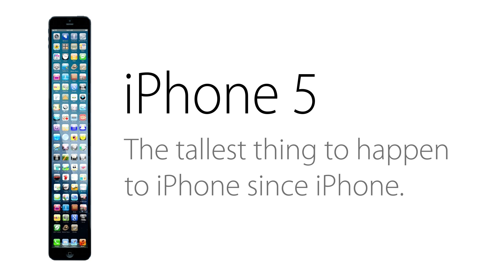

THE RED HERRING
CELEBRITY ADMITS THEY BREATHE AIR--UPROAR ENSUES
By Correspondent Leigh Murphy, 8/6/2018
Last Tuesday, celebrity Tiffany Northwest Kardashopez carelessly made an offhand remark that the "air was, like, really, um...uh, fresh today! Like yaaaaassssss."
The Internet, by which we mean several extremely critical, toxic people on Twitter which supposedly represent the entire Internet, has blown up over this issue.
Avid twitterer XXXedgybleedingheartXXX posted,"Two minutes ago, Tiff Kardashopez just #SAID that the air was fresh.
Celebrities can't just DO THAT. Celebrities are infallible gods! They don't breathe #AIR.
#woke #deep #thinkofthechildren #morelikeNOTcelebrities #ifyouvaxxyougetsmaxx They're setting a bad #ROLEMODEL for our children!!!!
Meanwhile, self-proclaimed fans of Ms. Kardashopez have rushed to her aid.
"Like, LEAVE TIFFANY ALOOOONE!" exclaimed Ashleeighe Reignbeau, self-proclaimed leader of Kardashopez' fans, the "Tiff Army".
"Like, she can like do whatever she wants! She can have ALL THE AIR IN THE WORLD. I WILL GIVE HER MY AIR. I WILL SPEND MY LIFE SAVINGS ON HER MAKEUP."
Tiffany, who is well known for a show that records her doing absolutely nothing, commented on this issue in a statement far beyond her writing capabilities.
"I am deeply sorry about breathing air. It was immature and impulsive of me to do so, and I would like to apologize to all my fans, as I have disappointed all of them.
I will promise to be better in the future, and refrain from breathing air. NOW WILL YOU BUY MY MERCH AND GIVE ME MONEY Many apologies."
Our reporters continue to monitor this situation, albeit with much apathy.

Related Websites:
The Onion, America's Finest News Source
Other Articles and Works by the Author:
Informative Header
A Mystery Thing
A Thing Using Attributes
My Astounding Use of Cascading Style Sheets
An Example of CSS
Other Articles by The Red HERRING:
LOCAL MAN CRITICIZES GOVERNMENT,
GOVERNMENT QUITS DUE TO HURT FEELINGS
DONALD TRUMP ANNOUNCES WHOLE PRESIDENCY WAS A JOKE,
LIBS WERE JUST TROLLED EPIC STYLE
The Author, Leigh Murphy:

The Onion, America's Finest News Source
Other Articles and Works by the Author:
Informative Header
A Mystery Thing
A Thing Using Attributes
My Astounding Use of Cascading Style Sheets
An Example of CSS
Other Articles by The Red HERRING:
LOCAL MAN CRITICIZES GOVERNMENT,
GOVERNMENT QUITS DUE TO HURT FEELINGS
DONALD TRUMP ANNOUNCES WHOLE PRESIDENCY WAS A JOKE,
LIBS WERE JUST TROLLED EPIC STYLE